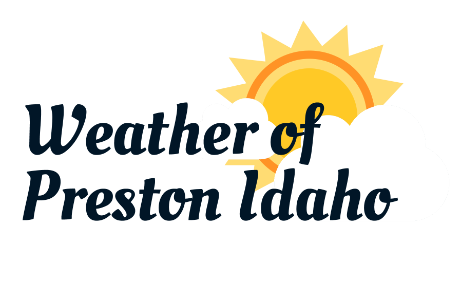

Website Planning Document
Color Scheme
Colors
Colors courtesy of coolors.co
Where colors apply
- Dark blue/black will be the color of the paragraph text, the navigation bar, and the primary color of the logo text.
- Burgundy will be the color of the footer, the color of h2+ text, and the hover color of the navigation bar.
- Green will be the color of the main heading background under the logo.
- Light blue will be the color of the body and upper header where the logo will be.
- The off-white color will be used for the background of the main sections and text in the navigation and footer.